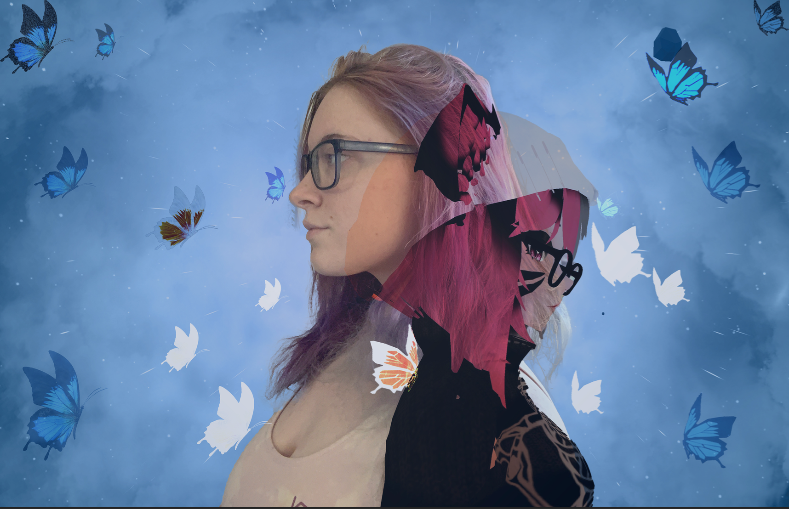
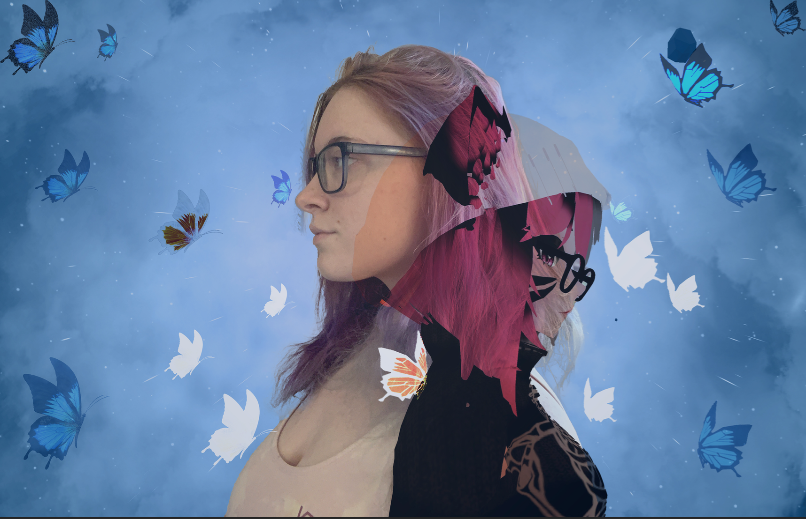

We went over figuring out what I wanted to create during the semester, decided on creating a collection of photography collages from images I have taken. Specifically collages or photo manipulation with the intention to give a suggestion of another world. Where ones imagination will try and put together how they personally believe this "fantasy" world to exist.
This week I was able to create a practice of what I am thinking ofcreating during the rest of the semester. Using around 4-5 photos creating another world based around my dear friend.

These two weeks I decided to take more photos and try and create some new pieces. Throughout this process I have been trying to create many different types of pieces that can represent what my overall project is about.
Throughout this week I took many new photos as I cam eup with a new idea. When going through youtube tutorials I discovered that it would be much better to express myself if I took self-portraits and used those to help me with creating pieces in which both my VrChat - Virutal Relaity - self and IRL - Real Self - would be able to be expressed together in my pieces. Expressing the idea of myself and my vrself would become one over time. Being super shy in-person about my feelings but being able to express that part of myself in VR made it hard for me to truly be me. Taking this time to express myself the same in both ways helped me grow as a person and the need to express that in my art seemed like the best way to go. During this week all I did was take images of myself in both realities so that I could get the best expressive portions of myself along the way.
During these next two weeks I focused on learning now to create pieces in which I could desolve myself in a way that I could express the shift between reality and Virtual Reality. This part took a lot of time and process to be able to make some pieces. Overall, I created around 3 usable pieces before our first Cirique. These pieces will be in order of which one's I made first to last. The first one taking me the longest time to create as I had to teach myself how to create these pieces through tutorials.
During the Last three weeks of being able to create pieces before I would need to be able to use these for my final project I created roughly five pieces. Along the way taking more and more images in VrChat and in real life. Using these images I have sectioned them out for pieces I will be using for my final submission/final pieces and what ones I plan to not use. Each of these pieces show a progression in how I felt connected during the time I had taken each photo
 

Overall, the pieces being used for my final submission include the first three pieces I made during weeks nine and ten as well as the pieces created during weeks eleven through thirteen that were placed in the "Used for Final Pieces" section. I had a lot of fun creating all of these pieces this semester and the last step to this process is figuring our what order I wished to present these pieces in before Open Studio on December 8th.